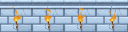
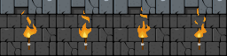

Castle 64 is manfried's submission for the N64Brew Game Jam. Castle 64 invites the player to play as Tericius, a knight exploring his home castle. The entry stands out with its use of large sprites and high-resolution video output. The game makes good use of the Expansion Pak to showcase impressive visuals.
Chatting with manfried
What got you into Nintendo 64 homebrew?
It's a long process. Nintendo 64 is my teenage video game console, so it has a special place in my memories. At the beginning of the 2010's I started buying games for it to get those I borrowed from friends when I was younger. Then I began to discover the prototypes stuff and then that some people translated japanese exclusives. This made me try to translate some ROMs too. The homebrew scene did not really exist for the N64 yet, I mean it was hard to find informations, it was mainly about hacks. I was a developper since my young age but never really considered making a game for N64 as it was famous for being very hard to code for and I don't consider myself very skilled. Then I read an article about Flappy Bird 64 and it seemed amazing to me that someone made a whole new game. I did not think/know that they was tools available for homebrews. So I started to search I did not find much stuff and eventually - I think it was 2017 or 2018 - I found n64squid's tutorial about downloading and installing the SDK. I did not really understood its tutorials about the nusys demos so it just kept it in my mind for another time. Then, I don't remember on long after that, I found the N64brew discord and there bunch of clever people talking about n64. I did not understand anything to what they said, but I asked a few questions and they were quite welcoming. Buu's tutorial was in the process of writing so I decided to read the two first chapters that were available and began to understand a few N64 code for the first time. I finally began to try some code myself, minor stuffs from his tutorial to play with, and check sometimes if they were some new chapters.
Well I could I could have just said that knowing about Flappy Bird 64 existence made me want to give it a try ;)
How did you come up with the concept for your game? Was there anything about the jam's theme that stood out to you?
Well, when I had some spare time, I was working on 2D platformer engine with nusys for about a year, so when the Jam was announced I saw it as an opportunity to force myself to do something. I did not felt inspired by the theme, it was a good one but I am not a game designer and did not found it easy to get a specific idea to fit this theme in terms of gameplay. I was highly motivate up to the theme announcement and then I was struggling to find an idea for it for weeks. My initial idea was an asteroid kind of game, as shooting on asteroid makes smaller asteroids it would have been about size. It was cool because I could use the 2D stuffs I already had writen. But it felt like a poor idea, so I changed to some top-down exploration style with the hope to find latter some gameplay mechanic about switching from high-rez to low-rez. Unfortunately it felt uninspired as all I could find was something like the dark world from a link to the past: a bright world in high-rez and some dark world in low-rez. My idea was to switch from one to another anywhen the player wanted to just by pressing the L trigger. By doing so, the low-rez world allowed to discover button or switchs to push to open gates but the counter part was to loose like or something like that. I did not have enought time to test this mechanic. Thought I had in mind that at least I could do a full high-rez game with some big sprites. I knew it would not be ground breaking and would not shine as much as clever gameplay mechanics based on size but I was pretty sure I would be the only one to have such a poor take on the theme ^^
What tools did you end up using to create your game?
Only existing stuff. It's using nusys from the official SDK and I coded it using notepad++. I had previously made my own tool to convert png files to 5551 color format binary files. For music I relied a lot on buu's tutorial about N64 Sound Tools. This part was the one I feared the most and it ended up being a lot easier than expected. SDK was installed on a VM sharing a folder with my main win10 so I just had to use it to build the ROM. Thanks to the fact that my N64 is ultra-hdmi modded and that I have an everdrive 3 and a hdmi capture card I could test my rom on hardware right from my computer so I could make hundreds of builds a day a see the result withing seconds. Because I did not create my own graphical nor music assets but only had to convert them I did not need that much tools. I also created a quickly made converter from text to binary in order to store my 2D maps, so I could edit my map using ascii symbol. That's actually the only thing I worked on after the jam as I finally made a graphical map editor. If I had this stuff before the jam I would have been able to focus on code and not on map editing :/
Is there anything you particularily enjoy about your game, or is there something you worked on that you're particularily proud of?
I am only proud about the fact I managed to deliver something by the end of the jam. Two month is short, especially when you are working alone on your spare time and with children around. I knew my submission was far from a finished product as it was lacking a lot of feature a game should have, it was more kind of a tech demo.
As far as Nintendo 64 games go, your use of larger 2D sprites and a high-resolution framebuffer is really unique. I remember seeing videos of your platformer stuff and being enamored with the style. How did you end up with such an interesting look?
Well I can't take credit for the look as I get these sprites from an artist who sold for a cheap price. He also offer somes for free from time to time and those from the platformer videos you saw where free ones. I did buy a few of them times ago when it was the sales season so I could have various sprites for when I have small projects. It's nice to have cute arts available when prototyping something or making a quick game for my kids.
Did you ever have performance issues while making Castle64? If so, what sort of ways did you optimize the game?
Indeed, it's hard to keep a strong FPS when dealing with high-rez for the N64. There's a reason why back in the days, 640x480 was only used in menus and not in gameplay.
First thing I had to do was to disable z-buffering. It could have make sense to rely on it to draw the sprites, but its cost on resources was too heavy. So I had to write a sort function on my maps after loading them to make sure that I draw elements in the appropriate order. Each tile is part of a double-chained list so I had to build a sorting algorithm.


I also had to make sure I did not try to draw too many sprites - even outside of screen - as each call to the drawing functions lowered the frame rate no mater if it was actually on screen or not. So for objects that I draw I decided that instead of having both a sprite for ground tile and the object it was better to have a them in a unique sprite. I did not do that for all of them though, but I could have to improve performance further. For example, for the torchs I had two times the very same animation texture but with a different background for the wall texture (see attached). Same for candelier and flags. I did so because I knew I did not have to load both of them as it was for a different map theme, so the transparent animation or the one with grounds took the same amount of RAM.
The use of Expansion Pak was mandatory for high-rez as the frame buffer already took 1.17MB of the standard 4MB. I tried to fit it all without the Pak but it would have required to load textures from ROM to RAM too often which would have lowered the frame rate even more. Most of the time I managef to keep it at 30 FPS with drops to 20 FPS when too many objects are on screen which is pretty close or even better than a lot of games from back in the days :)
If someone wanted to get into homebrew today, would you have any advice or suggestions for them?
My first one would be that they should not hesitate to give it a try, as long as they have a minimum programming background. But don't get into it with any expectation apart from having fun by learning stuff. I think the worst thing for motivation is to have a specific idea of game to create as most likely by getting into homebrew any pre-existing idea will crash into the reality wall of hardware capabilites.
Regarding N64 in particular, I would say that to start, a basic knowledge on C about pointers and structs is required. Then they should read Buu's tutorial to get familiar with the official SDK. I think the amount of ressources available to start with N64 is great now. They are plenty of codes to use as examples and great people to ask questions to, so getting into seems like it was never more accessible than today.